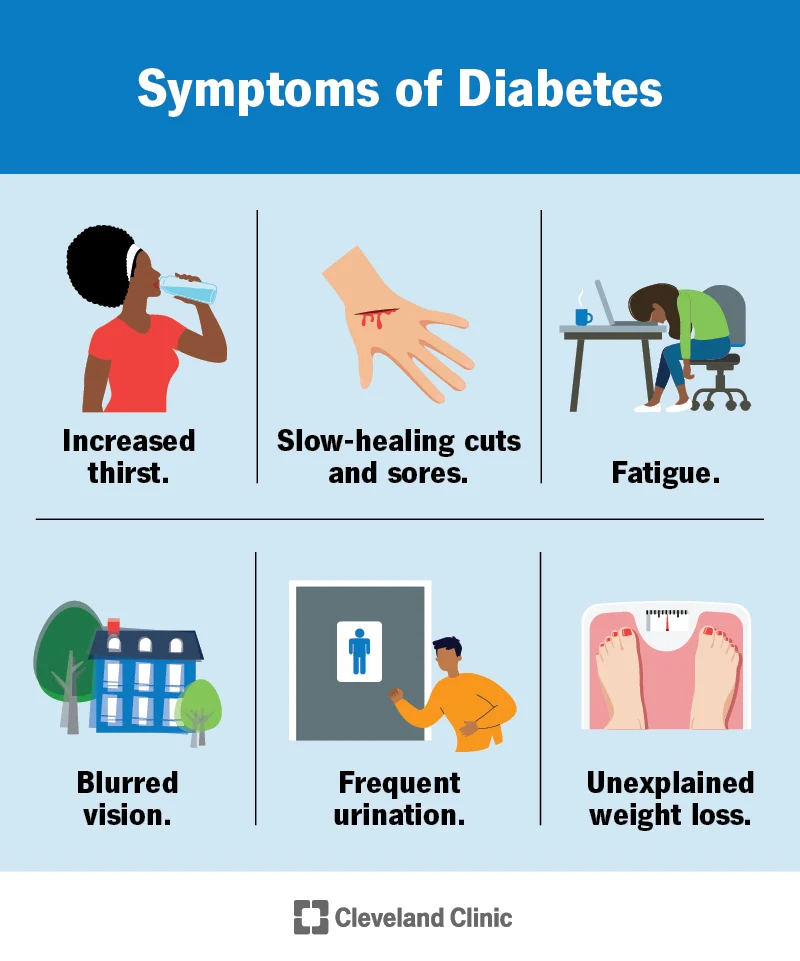
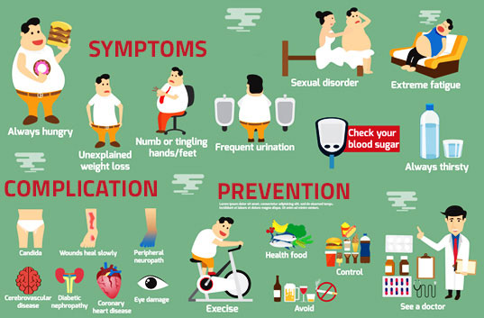

Prevention is Better than Cure
Intro
as a group, we chose this topic to research about to help with people and people in the medical community prevent diabetes. This could save people who are not aware that they have diabetes. This helps locating at-risk individuals to attack this disease when it is still minor.
Discussion(What?)
In this dataset African-American patients were included. These data are being used to predict if a patient has diabetes using lab variables. The patients are from Buckingham and Louisa. These data were recorded and organized three years ago; 2020. They will identify the results of the lab tests and predict if the patient has diabetes or not. This is a sample population. There were around over 300 patients that partook in the tests but we gathered only 51 patients in order to classify the data more accurately. The target population is anyone but mostly they focus on people who might be unhealthy or who have risks in having diabetes. The sampling method is random sampling where any sample can be selected. Please see the Qualitative and Quantitative data Page to see the data statistics and the pie graph of the qualitative and quantitative data.
Conclusion (Based on the data and graph)
Most of them have a glycosylated hemoglobin of around 4-6% which is in the normal range. After reviewing and seeing all the summary of the data, we can conclude that most of the patients have a medium frame. We have observed too that the bigger the frame the bigger the glycosylated hemoglobin, which means that people who have a high glycosylated hemoglobin are more prone to diabetes. This research was very crucial since it helped the patients know if they are prone to diabetes or not. Remember prevention is always better than cure.